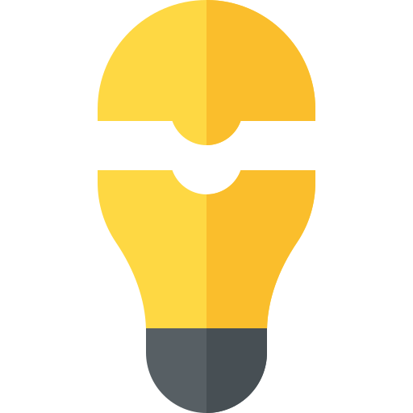
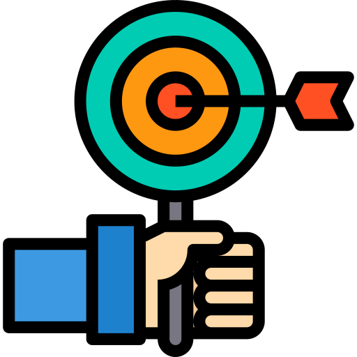

Vinculación del modelo de proyectos con la
formación basada en competencias
Antiguamente las competencias profesionales se solían
equiparar con frecuencia a una cualificación puramente técnica
y estrechamente vinculada a un área o materia específica. Sin
embargo, esta conceptualización de las competencias
profesionales es en la actualidad claramente insuficiente.
El modelo de proyectos fomenta un currículo congruente con el momento
actual debiera
basarse en el desarrollo de competencias, en habilidades
personales
y sociales.
Explicación del modelo de proyectos y principales características
Modelo de proyectos
Idea principal del modelo
Funciona con cualquier problema
Promueve definir objetivos
Ventajas del modelo de proyectos
Aprender a ser autocrítico